Bayesian t-Tests and Diagnostics
PSYC 6019-A01 / PSYC 6022-A01
2025-10-13 | Lab 7
Outline
t-tests as linear models
Bayesian t-tests
Diagnostics
t-Tests as a Linear Model
t-Tests as a Linear Model
We can specify a t-test as a linear model.
Our goal with t-tests is to compare means.
\(H_0\): \(\mu_1 = \mu_2\) aka \(\mu_1 - \mu_2 = 0\)
We can estimate the overall mean of the outcome with an intercept-only model, where \(\beta_0\) is the intercept.
\(y = \beta_0 + \epsilon\)
Then, we can add a slope term \(\beta_1\) to represent the difference in means between groups.
\(y = \beta_0 + \beta_1 \times \text{group} + \epsilon\)
t-Tests as a Linear Model
Together, these parameters contain us the same information as a t-test.
For example, in an experiment, if the control group is coded \(\text{group}_\text{control} = 0\) and the treatment group is coded \(\text{group}_\text{control} = 1\),
○ \(\beta_0 =\) mean of control group
○ \(\beta_1 =\) difference in means between control group and treatment group
○ \(\beta_0 + \beta_1 =\) mean of treatment group
Bayesian t-Tests
Bayesian Inference
So far, we’ve been working with the frequentist statistical framework, Null Hypothesis Significance Testing (NHST).
Frequentist
In NHST, we speak only about likelihoods. The probability that we would have observed our data \(D\) (or more extreme data) given some null hypothesis parameter \(\theta\)
E.g., the probability that we would observe a mean difference on a test of \(\bar{x}_\text{treatment} - \bar{x}_\text{control} = 5\) points given the true mean difference in the population is \(\bar{x}_\text{treatment} - \bar{x}_\text{control} = 0\).
\(P(D | \theta)\)
Bayesian
What we as researchers are often more interested in is the probability that a parameter \(\theta\) is the true parameter given data \(D\) we have observed.
E.g., given that we have observed a mean difference of \(\bar{x}_\text{treatment} - \bar{x}_\text{control} = 5\), what is the probability that the true mean difference is \(\bar{x}_\text{treatment} - \bar{x}_\text{control} = 0\)? What is the probability that the true mean difference is \(\bar{x}_\text{treatment} - \bar{x}_\text{control} = 5\)?
\(P(\theta | D)\)
Bayesian Inference
In order to get \(P(\theta | D)\), we need Bayes’ Rule.
\[ P(\theta | D) = \frac{ P(\theta) P(D | \theta) }{ P(D) } \]
○ \(P(\theta | D) =\) posterior distribution, this is what we want to create!
○ \(P(\theta)\) prior distribution, information we know about \(\theta\) before seeing \(D\)
○ \(P(D | \theta)\) likelihood, the same as before
○ \(P(D)\) scaling term, brings everything back down to probability scale. Makes Bayes analytic calulations mathematically challenging / impossible!
Motivates sampling from the posterior distribution, instead of calculating it.
Getting to the Posterior
Our goal in Bayes is to estimate \(P(\theta | D) = \frac{P(\theta) P(D | \theta)}{P(D)} = \frac{\text{prior} \times \text{likelihood}}{\text{scaling term}}\).
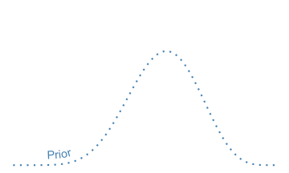
Getting to the Posterior
Our goal in Bayes is to estimate \(P(\theta | D) = \frac{P(\theta) P(D | \theta)}{P(D)}\).
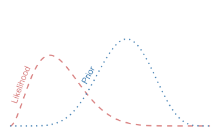
Getting to the Posterior
Our goal in Bayes is to estimate \(P(\theta | D) = \frac{P(\theta) P(D | \theta)}{P(D)}\).
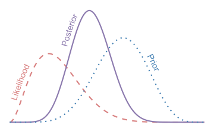
Getting to the Posterior
Our goal in Bayes is to estimate \(P(\theta | D) = \frac{P(\theta) P(D | \theta)}{P(D)}\).
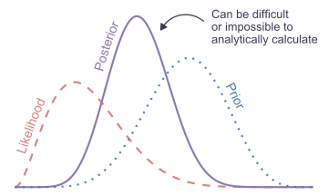
Getting to the Posterior
Our goal in Bayes is to estimate \(P(\theta | D) = \frac{P(\theta) P(D | \theta)}{P(D)}\).
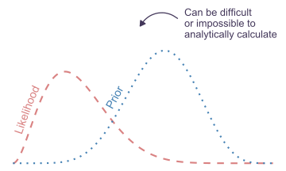
Getting to the Posterior
Our goal in Bayes is to estimate \(P(\theta | D) = \frac{P(\theta) P(D | \theta)}{P(D)}\).
Getting to the Posterior
How can we sample from posterior distributions? We can use a probabalistic programming language.

Stan is an open-source probabalistic programming language that’s widely used to write Bayesian models.
It has a well-developed, user-friendly R interface called rstanarm, which we will use!
○ Means we can start to work with Bayesian models without having to lean the Stan language itself
Bayesian t-Tests
A very user-friendly interface to Bayesian models with Stan is the rstanarm R package!
Bayesian t-Tests
A very user-friendly interface to Bayesian models with Stan is the rstanarm R package!
freq_t_test <- t.test(hwy ~ cyl, data = filtered_mpg)
freq_t_test
Welch Two Sample t-test
data: hwy by cyl
t = 17.586, df = 144.65, p-value < 2.2e-16
alternative hypothesis: true difference in means between group 4 and group 8 is not equal to 0
95 percent confidence interval:
9.918065 12.429731
sample estimates:
mean in group 4 mean in group 8
28.80247 17.62857
Model Info:
function: stan_glm
family: gaussian [identity]
formula: hwy ~ cyl
algorithm: sampling
sample: 4000 (posterior sample size)
priors: see help('prior_summary')
observations: 151
predictors: 2
Estimates:
mean sd 10% 50% 90%
(Intercept) 28.8 0.5 28.2 28.8 29.4
cyl8 -11.2 0.7 -12.0 -11.2 -10.3
sigma 4.0 0.2 3.7 4.0 4.3
Fit Diagnostics:
mean sd 10% 50% 90%
mean_PPD 23.6 0.5 23.0 23.6 24.2
The mean_ppd is the sample average posterior predictive distribution of the outcome variable (for details see help('summary.stanreg')).
MCMC diagnostics
mcse Rhat n_eff
(Intercept) 0.0 1.0 3842
cyl8 0.0 1.0 3981
sigma 0.0 1.0 3619
mean_PPD 0.0 1.0 3947
log-posterior 0.0 1.0 1759
For each parameter, mcse is Monte Carlo standard error, n_eff is a crude measure of effective sample size, and Rhat is the potential scale reduction factor on split chains (at convergence Rhat=1).Bayesian t-Tests
A very user-friendly interface to Bayesian models with Stan is the rstanarm R package!
summary() function contains lots of information about the model:
○ Estimates: means, SDs, and quantiles (can specify with probs) for each parameter.
○ Fit Diagnostics: mean_PPD mean of the posterior distribution of the outcome. If mean_PPD is very different from what you’d expect the mean of the outcome variable to be, may be an indicator of something being wrong.
○ MCMC Diagnostics: Diagnostics for the Markov Chain Monte Carlo sampler (more on this later).
Model Info:
function: stan_glm
family: gaussian [identity]
formula: hwy ~ cyl
algorithm: sampling
sample: 4000 (posterior sample size)
priors: see help('prior_summary')
observations: 151
predictors: 2
Estimates:
mean sd 5% 50% 95%
(Intercept) 28.8 0.4 28.1 28.8 29.5
cyl8 -11.2 0.7 -12.3 -11.2 -10.1
sigma 4.0 0.2 3.6 4.0 4.4
Fit Diagnostics:
mean sd 5% 50% 95%
mean_PPD 23.6 0.5 22.9 23.6 24.4
The mean_ppd is the sample average posterior predictive distribution of the outcome variable (for details see help('summary.stanreg')).
MCMC diagnostics
mcse Rhat n_eff
(Intercept) 0.0 1.0 3925
cyl8 0.0 1.0 4078
sigma 0.0 1.0 3987
mean_PPD 0.0 1.0 3919
log-posterior 0.0 1.0 1701
For each parameter, mcse is Monte Carlo standard error, n_eff is a crude measure of effective sample size, and Rhat is the potential scale reduction factor on split chains (at convergence Rhat=1).Bayesian t-Tests
prior_summary(bayes_t_test)Priors for model 'bayes_t_test'
------
Intercept (after predictors centered)
Specified prior:
~ normal(location = 24, scale = 2.5)
Adjusted prior:
~ normal(location = 24, scale = 17)
Coefficients
Specified prior:
~ normal(location = 0, scale = 2.5)
Adjusted prior:
~ normal(location = 0, scale = 34)
Auxiliary (sigma)
Specified prior:
~ exponential(rate = 1)
Adjusted prior:
~ exponential(rate = 0.15)
------
See help('prior_summary.stanreg') for more details\{rstanarm\} generally defines priors on the z-scale (“specified prior”) and then transforms them to the scale of our variables (“adjusted prior”) to actually run the model.
The “adjusted prior” is what was actually used.
Full Model
\[ \begin{aligned} \text{highway MPG}_i &= \beta_0 + \beta_1 \text{cylinders}_i + \epsilon_i && \text{likelihood: a linear model} \\ \beta_0 &\sim N(24, 17) && \text{prior for intercept} \\ \beta_1 &\sim N(0, 8.6) && \text{prior for slope} \\ \epsilon &\sim \text{Exponential}(0.15) && \text{prior for residual variance} \end{aligned} \]
Visualizing Results
The bayesplot package provides many helpful functions for plotting results of a Bayesian model.
Visualizing Results
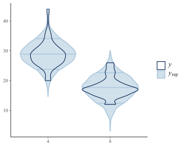
ppc_dens_overlay(
y = filtered_mpg$hwy,
yrep = posterior_predict(bayes_t_test, draws = 50)
)Visualizing Results
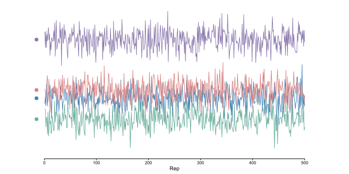
bayesplot::ppc_dens_overlay_grouped(
y = filtered_mpg$hwy,
yrep = posterior_predict(bayes_t_test, draws = 50),
group = filtered_mpg$cyl
)Visualizing Results
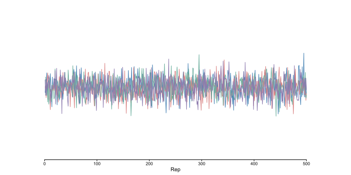
bayesplot::ppc_violin_grouped(
y = filtered_mpg$hwy,
yrep = posterior_predict(bayes_t_test, draws = 50),
group = filtered_mpg$cyl
)Visualizing Results
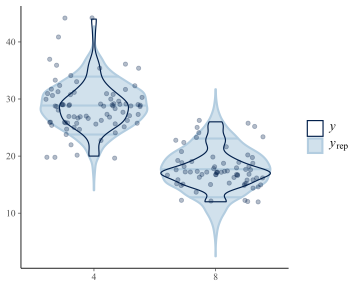
bayesplot::ppc_violin_grouped(
y = filtered_mpg$hwy,
yrep = posterior_predict(bayes_t_test, draws = 50),
group = filtered_mpg$cyl
) +
geom_jitter(data = filtered_mpg,
aes(y = hwy, x = cyl),
alpha = 0.3,
color = "#011f4b",
inherit.aes = F)Prior Implications
Given that the distribution of the outcome following just the priors includes negative values for highway MPG, maybe we can afford to narrow them a bit!
And maybe we want to be a little more skeptical of large effects, so we can narrow the prior on the slope, too.
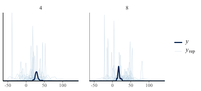
t_test_from_prior_only <- stan_glm(
hwy ~ cyl, data = filtered_mpg,
family = "gaussian", refresh = 0,
prior_PD = T
)
ppc_dens_overlay_grouped(
y = filtered_mpg$hwy,
yrep = posterior_predict(t_test_from_prior_only, draws = 50),
group = filtered_mpg$cyl
)Changing Priors
Original Model
prior_summary(bayes_t_test)Priors for model 'bayes_t_test'
------
Intercept (after predictors centered)
Specified prior:
~ normal(location = 24, scale = 2.5)
Adjusted prior:
~ normal(location = 24, scale = 17)
Coefficients
Specified prior:
~ normal(location = 0, scale = 2.5)
Adjusted prior:
~ normal(location = 0, scale = 34)
Auxiliary (sigma)
Specified prior:
~ exponential(rate = 1)
Adjusted prior:
~ exponential(rate = 0.15)
------
See help('prior_summary.stanreg') for more details\{{rstanarm}\} generally defines priors on the z-scale (“specified prior”) and then transforms them to the scale of our variables (“adjusted prior”) to actually run the model.
The “adjusted prior” is what was actually used.
We can choose to specify a prior on the z-scale (autoscale = T) or as-is (default) (example on next slide).
Changing Priors
Original Model
prior_summary(bayes_t_test)Priors for model 'bayes_t_test'
------
Intercept (after predictors centered)
Specified prior:
~ normal(location = 24, scale = 2.5)
Adjusted prior:
~ normal(location = 24, scale = 17)
Coefficients
Specified prior:
~ normal(location = 0, scale = 2.5)
Adjusted prior:
~ normal(location = 0, scale = 34)
Auxiliary (sigma)
Specified prior:
~ exponential(rate = 1)
Adjusted prior:
~ exponential(rate = 0.15)
------
See help('prior_summary.stanreg') for more details
Model Info:
function: stan_glm
family: gaussian [identity]
formula: hwy ~ cyl
algorithm: sampling
sample: 4000 (posterior sample size)
priors: see help('prior_summary')
observations: 151
predictors: 2
Estimates:
mean sd 5% 50% 95%
(Intercept) 28.8 0.4 28.1 28.8 29.5
cyl8 -11.2 0.7 -12.3 -11.2 -10.0
sigma 4.0 0.2 3.6 4.0 4.4
Fit Diagnostics:
mean sd 5% 50% 95%
mean_PPD 23.6 0.4 22.9 23.6 24.4
The mean_ppd is the sample average posterior predictive distribution of the outcome variable (for details see help('summary.stanreg')).
MCMC diagnostics
mcse Rhat n_eff
(Intercept) 0.0 1.0 4061
cyl8 0.0 1.0 4029
sigma 0.0 1.0 3856
mean_PPD 0.0 1.0 3933
log-posterior 0.0 1.0 1894
For each parameter, mcse is Monte Carlo standard error, n_eff is a crude measure of effective sample size, and Rhat is the potential scale reduction factor on split chains (at convergence Rhat=1).Prior Implications
Implications of our new priors.
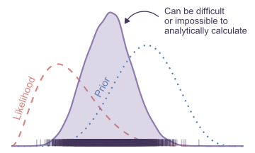
t_test_from_prior_only_v2 <- stan_glm(
hwy ~ cyl, data = filtered_mpg,
family = "gaussian", refresh = 0,
prior = normal(0, 1, autoscale = T),
prior_intercept = normal(24, 4),
prior_PD = T
)
ppc_dens_overlay_grouped(
y = filtered_mpg$hwy,
yrep = posterior_predict(t_test_from_prior_only_v2, draws = 50),
group = filtered_mpg$cyl
)Credible Intervals
Equal Tailed Interval
posterior_interval(bayes_t_test) 5% 95%
(Intercept) 28.051405 29.520887
cyl8 -12.280455 -10.117885
sigma 3.649137 4.404204Can also get ETIs from the summary() function, as before.
Highest Density Interval
# install.packages("bayestestR")
bayestestR::hdi(bayes_t_test, component = "all")Highest Density Interval
Parameter | 95% HDI
-----------------------------
(Intercept) | [ 27.89, 29.63]
cyl8 | [-12.44, -9.88]
# Fixed effects (sigma)
Parameter | 95% HDI
---------------------------
sigma | [ 3.56, 4.46]Diagnostics
Diagnostics
Our goal in Bayes is to estimate \(P(\theta | D) = \frac{P(\theta) P(D | \theta)}{P(D)} = \frac{\text{prior} \times \text{likelihood}}{\text{scaling term}}\).
But most of the time, \(P(\theta | D)\) is too complex to solve analytically. So, we estimate Bayesian models by drawing samples from the posterior with Markov Chain Monte Carlo (MCMC).

Diagnostics with Bayes
But most of the time, \(P(\theta | D)\) is too complex to solve analytically. So, we estimate Bayesian models with Markov Chain Monte Carlo (MCMC).
The job of MCMC is to explore and sample from the posterior probability distribution \(P(\theta | D)\) for all \(\theta\) at a rate proportional to each probability.
So, after many MCMC samples, we end up with a density distribution of samples with height matching \(P(\theta | D)\), and we can use those samples to make inferences about our parameters and outcomes!
○ E.g., we believe there is a 90% chance the difference in highway MPG between four- and eight-cylinder cars is within the interval [-12.28, -10.12].
But, all this hinges on the MCMC sampler—we have to check it for evidence that it sampled well.
Looking at the Samples
Often, a good first step for checking the sampler is just looking at what it sampled!
This is called a trace plot. It shows the samplers’ samples for each iteration it runs. Can you tell if this sampler sampled well?
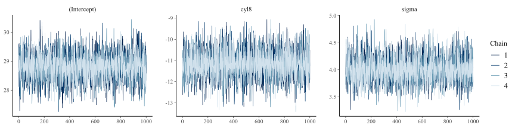
scale_colors <- c("steelblue", "#D98282", "#6BAE9D", "#8C7AAE")
x <- bayesplot::example_mcmc_draws(chains = 1, params = 1)
bayesplot::mcmc_trace(x) +
scale_color_manual(values = scale_colors)Looking at the Samples
Often, a good first step for checking the sampler is just looking at what it sampled!
What if I told you we ran another, completely separate run, and its samples looked like this?
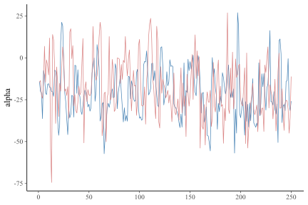
x <- bayesplot::example_mcmc_draws(chains = 2, params = 1)
bayesplot::mcmc_trace(x) +
scale_color_manual(values = scale_colors) +
guides(color = guide_none())Looking at the Samples
Often, a good first step for checking the sampler is just looking at what it sampled!
Or a third?

x <- bayesplot::example_mcmc_draws(chains = 3, params = 1)
bayesplot::mcmc_trace(x) +
scale_color_manual(values = scale_colors) +
guides(color = guide_none())Looking at the Samples
Often, a good first step for checking the sampler is just looking at what it sampled!
A fourth? How much confidence do you have in the sampler now?
Looking at traceplots cannot guarantee the sampler is correctly sampling from the distribution, but if we run multiple chains (separate runs of MCMC, each doing their own thing independently), we can at least check if the sampler is sampling consistently.
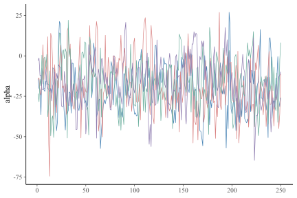
x <- bayesplot::example_mcmc_draws(chains = 4, params = 1)
bayesplot::mcmc_trace(x) +
scale_color_manual(values = scale_colors) +
guides(color = guide_none())Looking at the Samples
Our example’s trace plots! Also from bayesplot.
mcmc_trace(bayes_t_test_v2)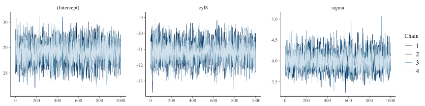
Good! They look like “fuzzy caterpillars”.
Trace Rank Plots
These are called “trace rank” plots. They’re very similar to trace plots, except they order the samples in magnitude. Want to see all chains (colors) equally represented across the x-axis.
It’s mostly personal preference, but these are sometimes easier to see bad chains.
mcmc_rank_overlay(bayes_t_test_v2)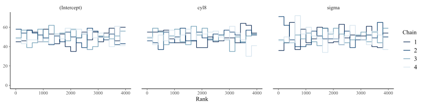
What does a bad chain look like?
Bad Sampling Example
Messing with the algorithm on purpose to make it sample poorly…
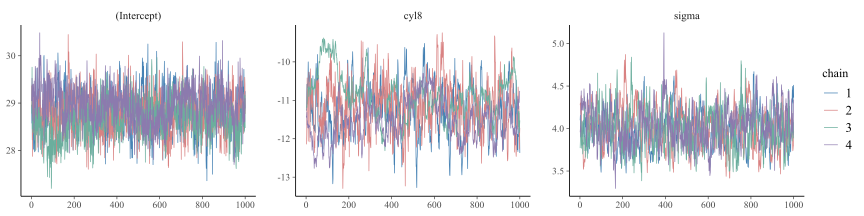
bad_example <- stan_glm(
hwy ~ cyl,
data = filtered_mpg,
seed = 12345,
chains = 4,
iter = 1200,
warmup = 200 ,
control = list(
max_treedepth = 2
)
)
mcmc_trace(bad_example) +
scale_color_manual(values = scale_colors)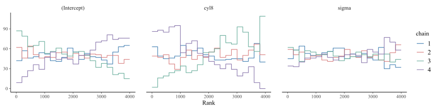
mcmc_rank_overlay(bad_example) +
scale_color_manual(values = scale_colors)Ick!
Rhat
Looking at traceplots is great, but it’s also helpful to have a numerical measure of how well the chains mixed. Especially when you have lots of parameters, not just three.
Rhat (\(\hat{R}\), read “R-hat”) is a measure of convergence among different MCMC chains.
The main idea of \(\hat{R}\) is to compare the variance between chains to the variance within chains.
Rhat Visualized: Bad
The main idea of \(\hat{R}\) is to compare the variance between chains to the variance within chains.
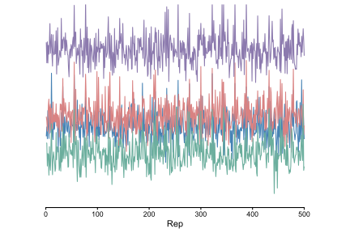
Rhat Visualized: Bad
The main idea of \(\hat{R}\) is to compare the variance between chains to the variance within chains.
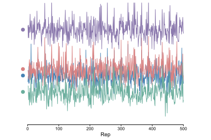
Rhat Visualized: Bad
The main idea of \(\hat{R}\) is to compare the variance between chains to the variance within chains.

Rhat Visualized: Bad
The main idea of \(\hat{R}\) is to compare the variance between chains to the variance within chains.
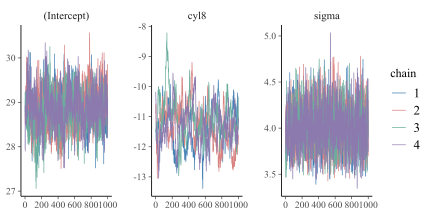
Variance between chain means is sooo different from variance within chains!
Rhat Visualized: Good
The main idea of \(\hat{R}\) is to compare the variance between chains to the variance within chains.
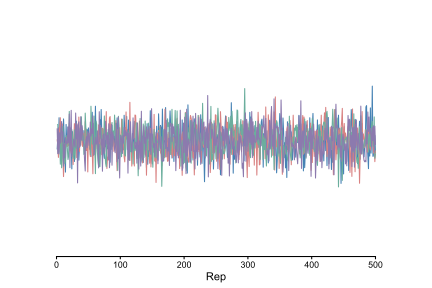
Rhat Visualized: Good
The main idea of \(\hat{R}\) is to compare the variance between chains to the variance within chains.

Rhat Visualized: Good
The main idea of \(\hat{R}\) is to compare the variance between chains to the variance within chains.

Variance between chain means is very close to variance within chains!
Rhat
In practice, you want to see \(\hat{R}\) values less than 1.01.
summary(bayes_t_test_v2)
Model Info:
function: stan_glm
family: gaussian [identity]
formula: hwy ~ cyl
algorithm: sampling
sample: 4000 (posterior sample size)
priors: see help('prior_summary')
observations: 151
predictors: 2
Estimates:
mean sd 10% 50% 90%
(Intercept) 28.8 0.4 28.2 28.8 29.4
cyl8 -11.2 0.7 -12.0 -11.2 -10.3
sigma 4.0 0.2 3.7 4.0 4.3
Fit Diagnostics:
mean sd 10% 50% 90%
mean_PPD 23.6 0.4 23.0 23.6 24.2
The mean_ppd is the sample average posterior predictive distribution of the outcome variable (for details see help('summary.stanreg')).
MCMC diagnostics
mcse Rhat n_eff
(Intercept) 0.0 1.0 4061
cyl8 0.0 1.0 4029
sigma 0.0 1.0 3856
mean_PPD 0.0 1.0 3933
log-posterior 0.0 1.0 1894
For each parameter, mcse is Monte Carlo standard error, n_eff is a crude measure of effective sample size, and Rhat is the potential scale reduction factor on split chains (at convergence Rhat=1).summary(bayes_t_test_v2)[, "Rhat"] (Intercept) cyl8 sigma mean_PPD log-posterior
1.0002263 0.9997811 1.0000078 1.0007192 1.0006277 Effective Sample Size (ESS)
In order to closely approximate the posterior (\(P(\theta | D)\), the point of this all!), we need to make sure we have a large number of MCMC samples.
But one issue: the samples within a chain are not independent samples.
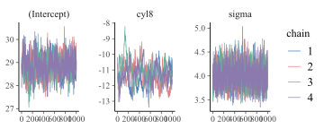
x <- bayesplot::example_mcmc_draws(chains = 1, params = 1)
bayesplot::mcmc_trace(x) +
scale_color_manual(values = scale_colors)Do you see how they follow each other around?
ESS accounts for that autocorrelation. No hard and fast rule, but might be concerned if ESS is lower than 200 or lower than 10% of your total samples.
Effective Sample Size (ESS)
Let’s check our ESS values.
summary(bayes_t_test_v2)
Model Info:
function: stan_glm
family: gaussian [identity]
formula: hwy ~ cyl
algorithm: sampling
sample: 4000 (posterior sample size)
priors: see help('prior_summary')
observations: 151
predictors: 2
Estimates:
mean sd 10% 50% 90%
(Intercept) 28.8 0.4 28.2 28.8 29.4
cyl8 -11.2 0.7 -12.0 -11.2 -10.3
sigma 4.0 0.2 3.7 4.0 4.3
Fit Diagnostics:
mean sd 10% 50% 90%
mean_PPD 23.6 0.4 23.0 23.6 24.2
The mean_ppd is the sample average posterior predictive distribution of the outcome variable (for details see help('summary.stanreg')).
MCMC diagnostics
mcse Rhat n_eff
(Intercept) 0.0 1.0 4061
cyl8 0.0 1.0 4029
sigma 0.0 1.0 3856
mean_PPD 0.0 1.0 3933
log-posterior 0.0 1.0 1894
For each parameter, mcse is Monte Carlo standard error, n_eff is a crude measure of effective sample size, and Rhat is the potential scale reduction factor on split chains (at convergence Rhat=1).summary(bayes_t_test_v2)[, "n_eff"] (Intercept) cyl8 sigma mean_PPD log-posterior
4061 4029 3856 3933 1894 Effective Sample Size (ESS)
Bulk and Tail ESS tell you about your effective sample size in the center (bulk) of the distribution and the tails of the distribution.
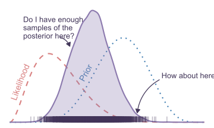
# install.packages("posterior")
posterior::summarise_draws(bayes_t_test_v2,
"mean", "sd",
"ess_bulk", "ess_tail")# A tibble: 3 × 5
variable mean sd ess_bulk ess_tail
<chr> <dbl> <dbl> <dbl> <dbl>
1 (Intercept) 28.8 0.446 4003. 2843.
2 cyl8 -11.2 0.668 4001. 2564.
3 sigma 4.01 0.230 3855. 2609.Warnings
bad_example <- stan_glm(hwy ~ cyl, data = filtered_mpg, seed = 12345, iter = 40)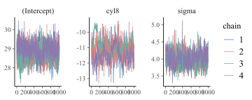
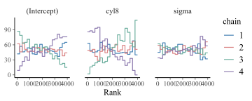
bad_example <- stan_glm(hwy ~ cyl, data = filtered_mpg, seed = 12345, iter = 40, refresh = 0)
mcmc_trace(bad_example) +
scale_color_manual(values = scale_colors)
mcmc_rank_overlay(bad_example) +
scale_color_manual(values = scale_colors)Output
Warnings
Stan documentation on warnings
{rstanarm} documentation on troubleshooting`
Things to try…
Rhat or ESS too low?
Try increasing the number of samples (iter, default is 1000 for each of four chains).
Divergent transitions?
Increase adapt_delta towards 1 (default is 0.95)
Max treedepth exceeded?
If everything else is good, probably fine. Otherwise, try increasing max_treedepth (default is 15). Add to control argument (control = list(max_treedepth = 16)).
Bayes Factors
Comparing models to each other. Here, an intercept-only model to a slope-and-intercept model.
# install.packages("bayestestR")
# install.packages("bridgesampling")
bayes_t_test_v0 <- stan_glm(
hwy ~ 1, data = filtered_mpg,
prior_intercept = normal(24, 15),
family = "gaussian",
diagnostic_file = here::here("lab", "model-diagnostics",
"bayes_t_test_v0.csv")
)
bayes_t_test_v2 <- stan_glm(
hwy ~ cyl, data = filtered_mpg,
prior = normal(0, 1.5, autoscale = T),
prior_intercept = normal(24, 15),
family = "gaussian",
diagnostic_file = here::here("lab", "model-diagnostics",
"bayes_t_test_v2.csv")
)
bayes_factor <- bayestestR::bayesfactor_models(bayes_t_test_v0,
bayes_t_test_v2)bayes_factorBayes Factors for Model Comparison
Model BF
[2] cyl 9.44e+33
* Against Denominator: [1] (Intercept only)
* Bayes Factor Type: marginal likelihoods (bridgesampling)We can say the model with the slope term is \(9.44\times10^{33}\) (very large!) times as likely as the model without.
Lab 07 Assignment
Due Friday, 10/16!